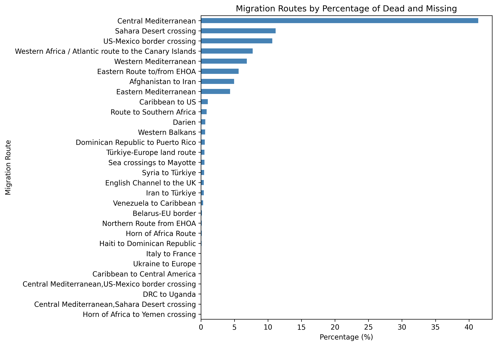

Exploratory Visualizations: Demographics, Origins, Causes and Routes
To understand the underlying patterns in migrant deaths, we first explore descriptive statistics and visualizations based on the full dataset. These include demographic breakdowns, top countries of origin, the most common causes of death, and the relative frequency and danger of different migration routes. These insights help lay the foundation for the spatial analyses that follow.
Demographic Profile of the Deceased
Demographic Distribution
The vast majority of recorded deaths involve men (66.3%), followed by women (20.9%) and children (12.9%). This distribution reflects broader global migration patterns, where adult males are more likely to undertake risky routes. However, the substantial proportion of women and children highlights the growing vulnerabilities across all migrant groups, particularly in family-based or forced displacements.

Geographic Origins of Migrants
Top 10 Countries of Origin
The country of origin offers important context for understanding migratory push factors. A significant portion of the data is marked as “Unknown”, underscoring the frequent lack of identification during fatal incidents. Among identifiable cases, countries like Afghanistan (17%) and Mexico (8%) are most represented, followed by a variety of African and Central American nations. These patterns correspond to regions affected by conflict, instability, and poverty.

Causes of Death
Cause of Death (Top 6)
By far the most frequent cause of death is drowning (57.5%), highlighting the extreme risks of maritime crossings, especially in the Mediterranean and Atlantic. A considerable portion of cases are labeled as mixed or unknown causes (14.5%), revealing gaps in incident reporting. Other major contributors include hazardous transport accidents (8.9%), violence (6.8%), and harsh environmental conditions (6.8%) such as dehydration, desert exposure, and extreme temperatures—particularly on land routes through the Sahara.
Migration Routes – Comparing Exposure and Fatality
Routes by Reported Incidents
This bar chart shows the most frequently reported migration routes in terms of number of incidents. The US–Mexico border leads with approximately 35% of all reported incidents, followed by the Afghanistan–Iran corridor and Sahara Desert crossings. However, this chart only reflects event frequency, not severity.

Routes by Deaths and Missing
When shifting the focus to the actual number of deaths and disappearances, a stark contrast becomes evident: the Mediterranean route emerges as the deadliest by far, accounting for over 50% of all recorded deaths globally. Other high-risk corridors include the Sahara Desert (11%), US–Mexico border (10%), Canary Islands route (7.7%), Eastern Africa to Gulf (6.8%), and Afghanistan to Iran (5%).
This divergence between frequency and fatality underscores the importance of looking beyond event counts. While land crossings may be more common, maritime routes often involve capsized vessels and mass casualties in single incidents. For this reason, our subsequent analyses concentrate on six key migration corridors where the impact is most severe.
Selected Routes for Deeper Analysis: Based on the visualizations above, our analysis focuses on six corridors that account for over 92% of global deaths: the Mediterranean (Central, Western, Eastern), Sahara Desert, US–Mexico border, Canary Islands route, Eastern Route to/from EHOA, and the Afghanistan–Iran corridor. These were selected due to their high burden of fatality, geographic diversity, and representativeness of broader global patterns.